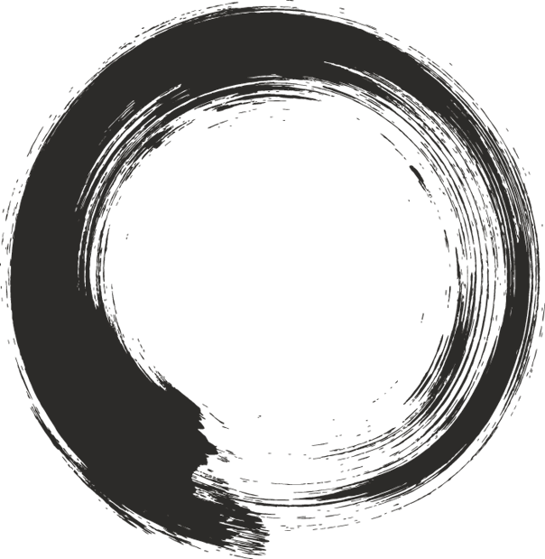
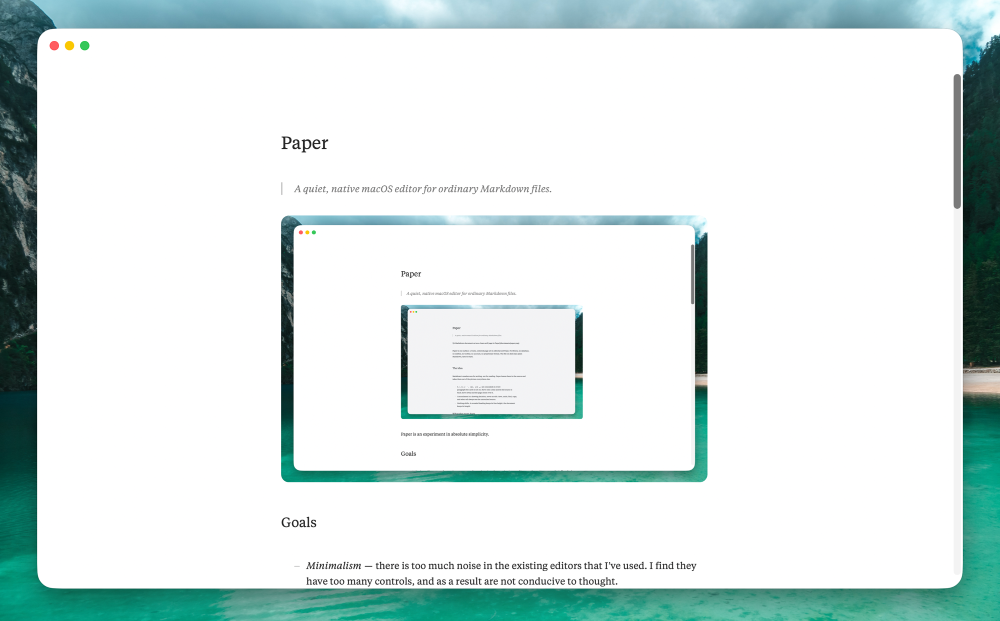

Papel
A quiet, native markdown editor for macOS.

Papel is the simplest markdown editor imaginable, by design.
It is an exercise in absolute simplicity and focus. It rejects anything that isn’t conducive to clear thinking.
In most editors, every button is a standing invitation to do something other than write (or read).
So I’ve done away with them. There is nothing other than the text.
It is also deliberately anti-tabs. A second document gets a second window, as the Mac has always done it. That is a choice in favor of singular focus. Feel free to fork if that philosophy doesn’t suit you.
It is a descendant of Obsidian’s file > app philosophy. Apps are ephemeral, but files last—and you should own them. Everything is just a file on your computer.
Lastly, it is free and open. We will continue our campaign to make delightful software abundant again.
Made by Andrew Jones. Source and releases on GitHub.